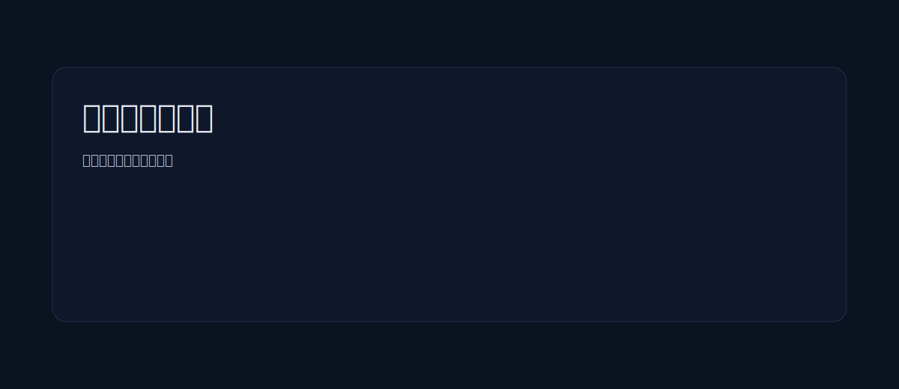
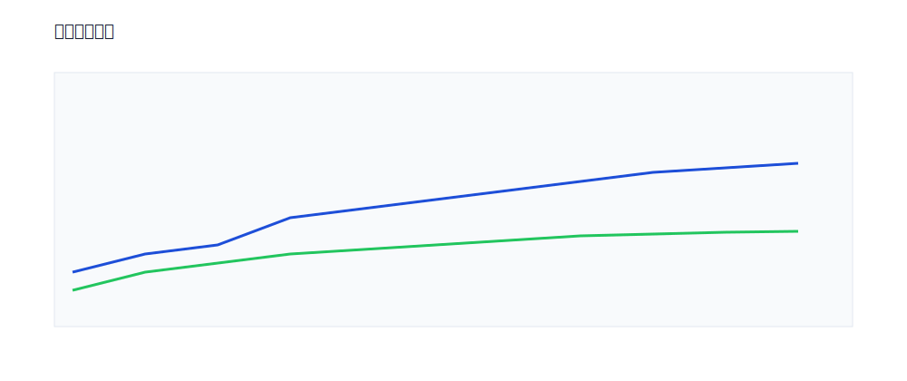

项目里程碑汇报

一、范围与目标
明确项目目标、范围与关键成功指标（KSI）。
二、关键里程碑
M1：需求分析与范围确认（完成）
M2：架构设计与评审（完成）
M3：核心模块开发（进行中）
M4：联调与压测（计划）
三、风险与缓解措施
风险
影响
缓解措施
第三方接口不稳定
联调延期
引入熔断与降级策略
关键人力冲突
进度波动
建立双人备份机制
上线窗口受限
延迟发布
准备灰度与回滚剧本
四、资源与排期
角色
人数
关键职责
前端
3
界面与交互实现
后端
3
接口与数据服务
测试
2
质量保障
五、阶段交付
每两周一次迭代，交付可运行的增量功能。
六、可视化图示

七、质量保障
覆盖单元、集成与端到端测试，关键路径必测。
八、结论与行动
维持当前节奏推进，优先解决影响上线窗口的风险点。